$ iam-operations --status --realm airbus-iam-lab
IAM Operations
& CyberIAM Monitoring Lab
Identity · Access · Events · Evidence
An end-to-end IAM operations lab built like a small identity control center: a real Keycloak identity provider, a Flask application protected with OpenID Connect, Python automation over the Admin REST API, a normalized IAM event pipeline and a Streamlit CyberIAM dashboard.
Every capability produces evidence — CSV exports, Markdown reports, dashboard views — so identity inventory, privileged access and authentication activity can be reviewed and audited, not just configured.
01 · Identity & access flow
How a login travels through the lab.
The pipeline in one view: authentication through Keycloak, token validation and RBAC at the Flask app, and a parallel operations lane where the Admin REST API feeds automation, event monitoring and the CyberIAM dashboard.
How to read this — top lane: what happens when a user logs in. Bottom lane: what the operations tooling does with the same identity data. The numbered walkthrough below follows one request through both lanes.
- The browser requests the Flask app.
- Flask finds no session and redirects to Keycloak.
- Keycloak authenticates the user via the OIDC Authorization Code Flow.
- Flask exchanges the code, validates the tokens and extracts identity claims.
- Technical Keycloak roles are filtered out of the claims.
- Only the lab roles (user, admin, auditor, support) reach the profile UI.
- Python automation exports users and roles through the Admin REST API.
- Monitoring scripts extract login, failed-login and admin events.
- Events are normalized into a single CSV with severity classification.
- The Streamlit dashboard reads the generated evidence files — nothing live.
02 · Context
What this is, why it was built, and the problem it solves.
How to read this section — left to right: the project in one panel, the visibility gap it addresses, and the recurring operational tasks it automates.
What this project is
A local, hands-on IAM Operations lab that reproduces the daily work of an identity team end to end — from a running identity provider to audit-ready reports. Nothing is mocked: the Flask app authenticates against a real Keycloak realm, and every dashboard figure traces back to an exported evidence file.
- Keycloak realm, OIDC client, users and role mappings.
- Flask + OpenID Connect protected application with RBAC.
- Python automation and event monitoring over the Admin REST API.
- Streamlit dashboard consolidating the operational evidence.
Why it was built
IAM Operations teams are accountable for questions that must be answered with evidence, on demand. This lab automates the visibility those answers require:
- Users — who exists in the realm right now?
- Roles — what access does each identity hold?
- Privileged accounts — who has admin power, and is it justified?
- Authentication events — who logged in, and who failed to?
- Administrative changes — what was modified, by whom?
- Operational evidence — can each answer be backed by a file?
- Access reviews — can reporting be produced on schedule?
The problem it solves
Without automation these are slow, manual console tasks that leave no audit trail. The lab turns each recurring IAM operation into a repeatable job with an evidence file behind it:
- Checking who has access to what.
- Validating role assignments against the expected model.
- Identifying privileged accounts for review.
- Reviewing failed logins for anomalies.
- Reviewing admin changes in the realm.
- Producing evidence files (CSV / Markdown).
- Visualizing operational status in a dashboard.
03 · Platform architecture
Five layers, each with verifiable output.
The lab is structured like an IAM platform: identity at the base, access in the middle, operations and evidence on top. Each layer produces artifacts the next layer consumes.
A dedicated realm isolates the lab: four test users, four realm roles and a confidential OIDC client, orchestrated locally with Docker Compose.
Full Authorization Code Flow — login, callback with state and signature validation, protected /profile route and RP-initiated logout. The profile UI filters technical Keycloak roles and shows only lab roles, with a clear privileged vs standard access classification.
Python scripts query the Keycloak Admin REST API and turn manual console checks into repeatable, evidence-producing jobs.
Login, failed-login, logout and admin events are extracted from Keycloak, normalized into a single schema and classified by severity — one consistent event stream instead of scattered raw exports.
The operations console. Built with pandas and Altair, it reads only the exported evidence files — no live credentials — and consolidates identity, access and event data into reviewable views.
04 · What I built
Every component, delivered and validated.
The concrete deliverables: realm airbus-iam-lab, OIDC client flask-oidc-app, the lab roles user / admin / auditor / support, test users, a protected Flask profile, IAM automation, event monitoring and the Streamlit dashboard.
Identity & SSO
- Keycloak realm airbus-iam-lab with event logging enabled.
- Confidential OIDC client flask-oidc-app with redirect and logout configuration.
- Four lab users mapped to the roles user, admin, auditor, support.
- Flask app with the complete Authorization Code Flow.
- Protected /profile route with filtered role display.
Automation & reporting
- User-role inventory exported to CSV via the Admin REST API.
- Privileged account review — admin role holders flagged automatically.
- Missing lab role check for RBAC hygiene and compliance.
- Daily IAM report consolidating findings in Markdown.
Event monitoring
- Login / failed-login / logout events exported from Keycloak.
- Admin events capturing realm configuration changes.
- Normalization pipeline into one unified IAM events CSV.
- Severity classification applied to every event.
Validated results — what each number means
- 4 lab users — the full identity population covered by the inventory export.
- 4 lab roles — the RBAC model (user, admin, auditor, support) validated end to end.
- 1 protected app — the Flask relying party enforcing OIDC on /profile.
- 1 privileged account — the admin role holder, automatically detected and flagged for review.
- 10 IAM events normalized — logins, failures, logouts and changes unified into one severity-tagged CSV.
- 1 failed login reviewed — captured by monitoring, classified and analyzed in the dashboard.
- 3 admin events reviewed — realm changes traced with resource and operation context.
05 · Dashboard modules
The CyberIAM operations console.
Eight modules, each answering one operational question — all reading from exported evidence, never from live credentials.
Executive overview
KPIs for identities, roles, privileged accounts and event volume at a glance.
Identity inventory
Every user in the realm with its role assignments, exported and versionable.
Privileged accounts
Who holds the admin role, surfaced for recurring privileged access review.
Role compliance
Users missing expected lab roles, flagged for RBAC hygiene follow-up.
Event monitoring
The normalized IAM event stream with type and severity classification.
Failed login review
Authentication errors isolated for analyst review, with user and client context.
Admin events review
Administrative changes in the realm — what changed, where, and when.
Evidence & reporting
Index of CSV and Markdown outputs backing every figure shown above.
06 · Evidence gallery
The lab, as it actually runs.
Screenshots grouped by story: authentication at the identity provider, the protected application, and the CyberIAM dashboard. Click any image to open it at full size.
How to read this gallery — the groups follow one session through the lab: Group A proves authentication is enforced, Group B proves RBAC works in the app, Group C proves the operational data reaches the dashboard. Each caption states what that screenshot demonstrates.
Identity provider & login
Authentication is delegated to Keycloak; unauthenticated requests never reach protected content.
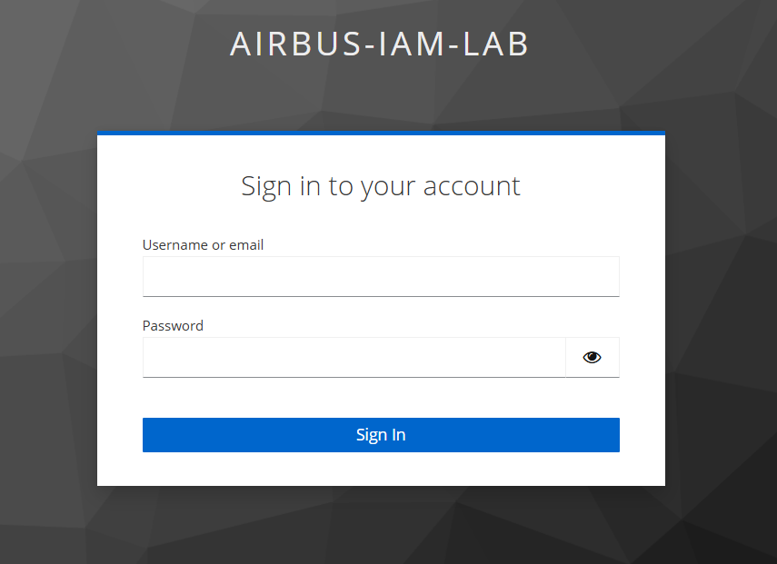
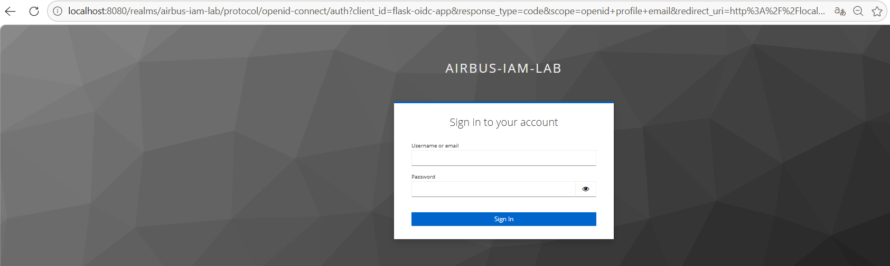
Protected Flask application
The relying party: OIDC session handling, role filtering and privileged vs standard access classification.
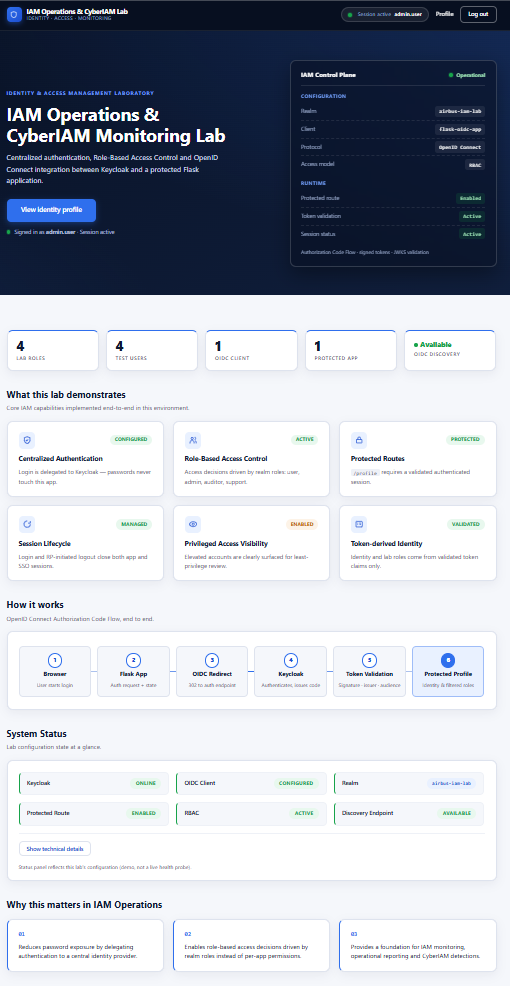
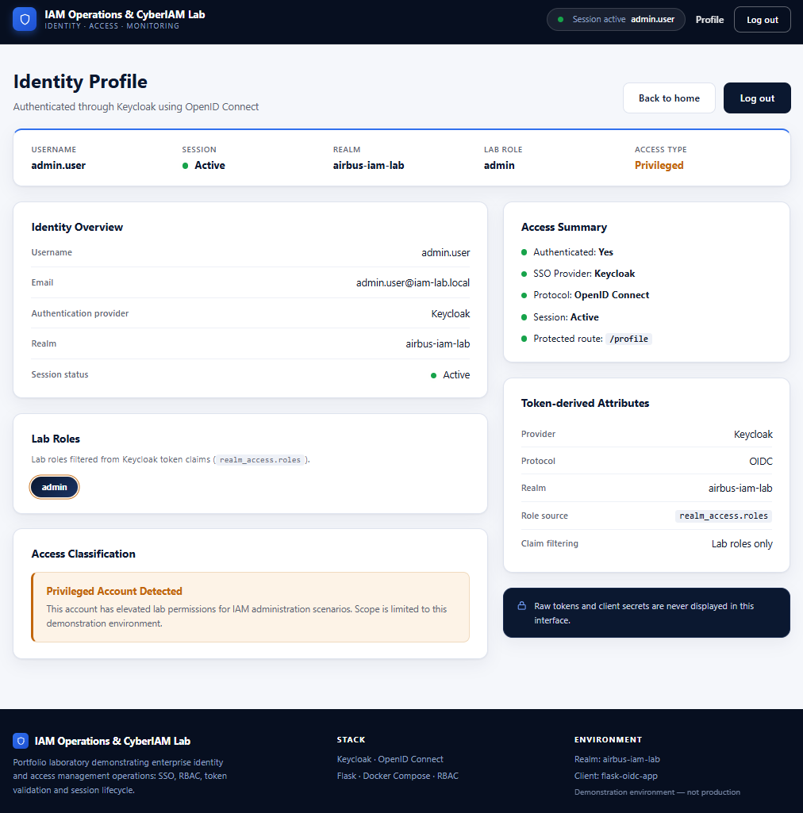
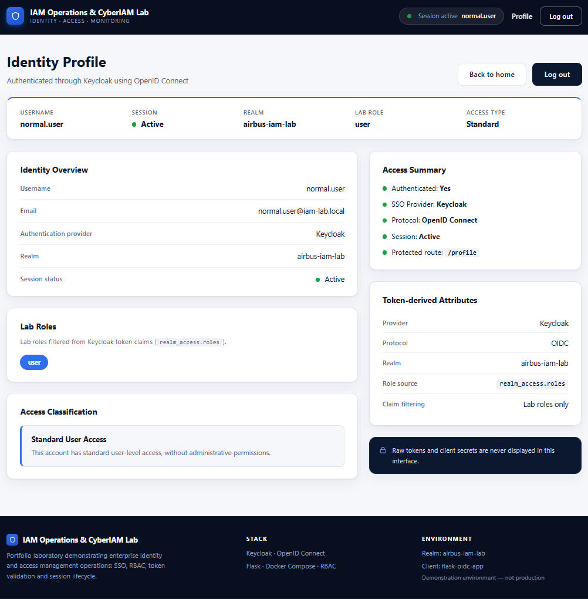
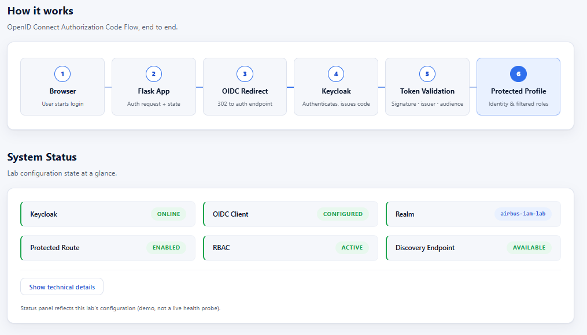
CyberIAM dashboard
The Streamlit operations console: KPIs, inventory, privileged review and event analysis — all from exported evidence.
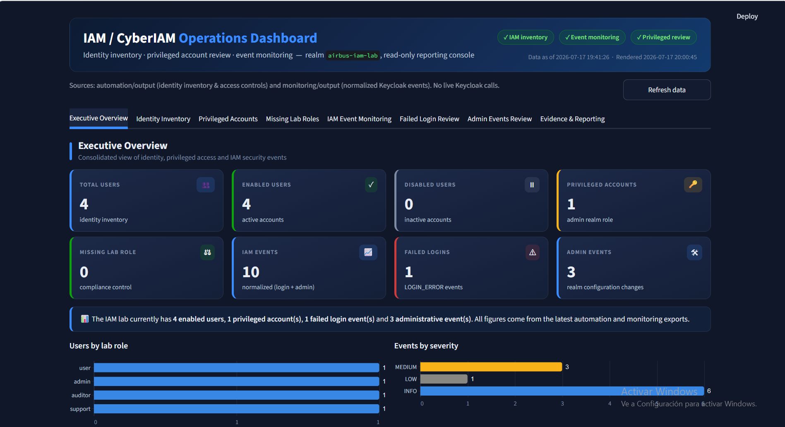
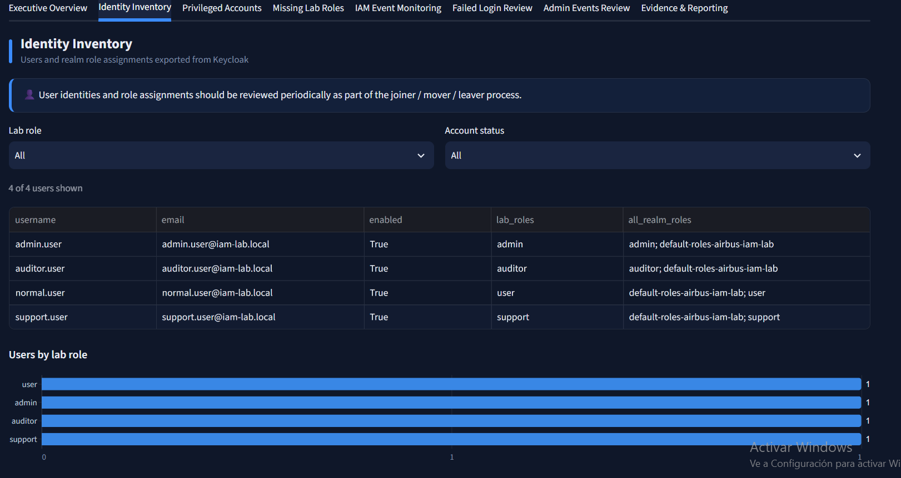
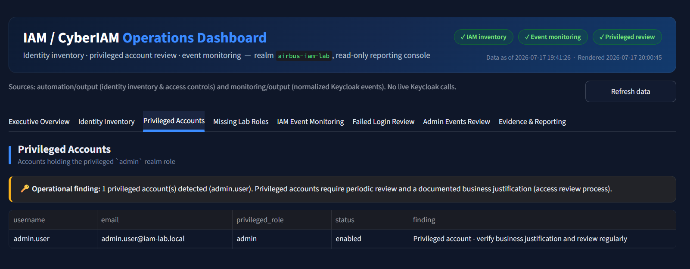
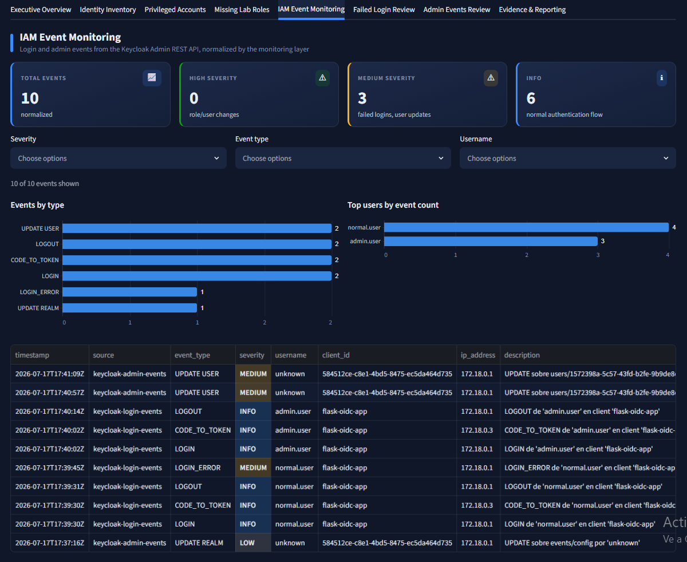
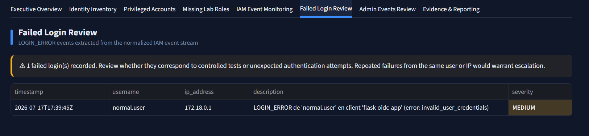
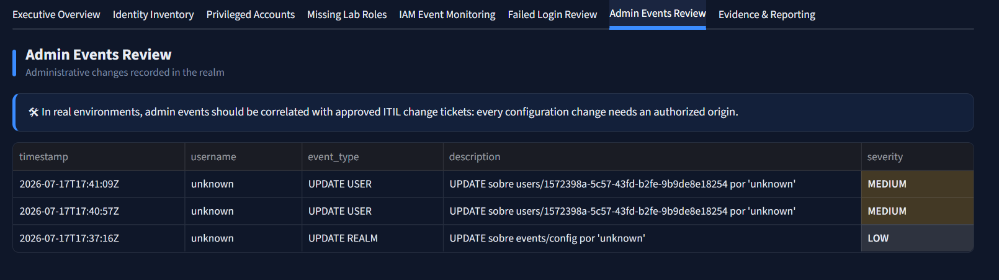
No public demo — by design
This lab runs locally. Screenshots and documentation are provided as public evidence.
07 · Technical value
Why this is relevant to IAM Operations / CyberIAM.
The lab is scoped around the responsibilities an IAM Operations or CyberIAM analyst actually carries — each capability below maps to a recurring task in that role.
Identity & access engineering
Keycloak administration, OIDC integration with the Authorization Code Flow, RBAC design and validation, and privileged access visibility — the core technical skills of IAM operations.
CyberIAM monitoring
Authentication and administrative activity treated as monitorable events: extraction, normalization, severity classification and dedicated review workflows for failed logins and admin changes.
Audit-friendly operations
Every check produces CSV or Markdown evidence and a recurring report — service-management style outputs that map directly to access reviews and audit requests.
Mapped to the day-to-day of the role
- Identity lifecycle visibility — a current, exportable picture of every account in the realm.
- RBAC validation — role assignments checked against the expected model, gaps flagged.
- Privileged access review — admin role holders surfaced automatically for recurring review.
- Authentication monitoring — login and failed-login activity captured and classified.
- Admin event review — realm configuration changes traced for accountability.
- ITIL / change-management correlation — admin events provide the raw trail to reconcile changes against tickets and approvals.
- Audit-friendly evidence — every check leaves a CSV or Markdown artifact that can be handed to an auditor.
- Operational reporting — a daily consolidated report plus a dashboard for status at a glance.
08 · Next steps
What would come next in a real environment.
This is a local hands-on lab, not a production deployment — and the honest way to present it is to name what a production rollout would still need. These are the realistic next iterations:
Scheduled automation
Run the inventory, privileged review and daily report on a scheduler instead of on demand.
SIEM / SOC integration
Ship the normalized IAM event stream into a SIEM or SOC dashboard for correlation.
Failed-login alerting
Alert on repeated failed logins per account or client instead of manual review.
Privileged access workflow
Add an approval workflow before the admin role can be granted or retained.
ITIL ticket correlation
Reconcile every admin event against a change ticket to close the change-management loop.
MFA / PKI checks
Extend authentication with MFA enrollment checks and certificate-based options.
Reverse proxy & TLS hardening
Front the stack with a hardened reverse proxy and end-to-end TLS for realistic exposure.
09 · Security notes
Built and published with secrets in mind.
Handling of secrets and tokens
- No secrets are displayed anywhere in the UI.
- Raw tokens are never rendered or logged for display.
- Client secrets live in a local .env file that is not committed.
- Technical Keycloak roles are filtered out of the profile UI.
- The dashboard reads exported evidence files only — it needs no live credentials.
- This is a local hands-on lab, not a production system, and is presented as such.